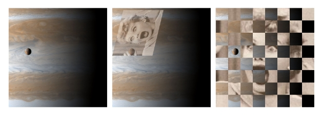
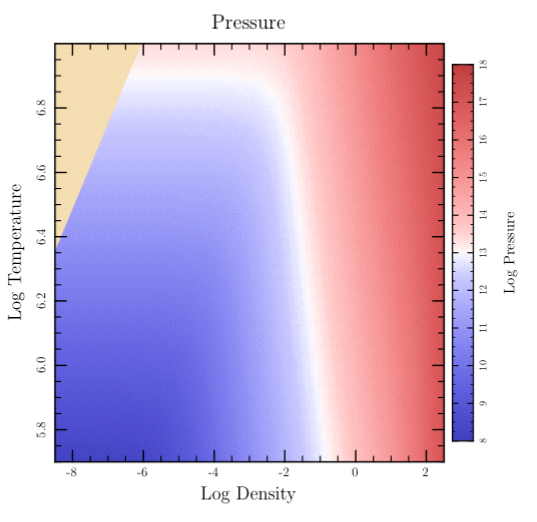

class Tioga::Images
See also Tutorial::SampledData.
Public Instance Methods
Creates a data representation suitable for use with #show_image from the values in the Dtable data according to the entries in the dictionary dict. Only data rows between 'first_row' and 'last_row' and columns between 'first_column' and 'last_column' are included. Data values between 'min_value' and 'max_value' are mapped linearly to numbers between 0 and 'max_code' and then rounded to the nearest integer. Data values less than 'min_value' are mapped to the integer specied by 'if_below_range', and values greater than 'max_value' are mapped to the integer given by 'if_above_range'.
If the flag 'masking' is true, then 'max_code'
is set to 254 and all data values out of range are assigned the code 255.
The result can then be used in a call to #show_image with
'value_mask' set to 255 to prevent out-of-range values from being
displayed.
Dictionary Entries
'first_row' => an_integer # first row of data to include (default 0) 'last_row' => an_integer # last row of data to include (default -1) 'first_column' => an_integer # first column of data to include (default 0) 'last_column' => an_integer # last column of data to include (default -1) 'min_value' => a_float # lower bound on valid data 'max_value' => a_float # upper bound on valid data 'masking' => true_or_false # default false 'max_code' => an_integer # integer between 1 and 255 (default 255) 'if_below_range' => an_integer # integer between 0 and 255 (default 0) 'if_above_range' => an_integer # integer between 0 and 255 (default max_code)
Example: For an image that only shows the data values between 0 and 1 and masks out other values, you might do this:
create_image_data(data, 'min_value' => 0, 'max_value' => 1, 'masking' => true)
# File lib/Tioga/Images.rb, line 320 def create_image_data(data, dict) end
Creates a data representation suitable for use with #show_image from the values in the Dtable data according to the entries in the dictionary dict. Only data rows between 'first_row' and 'last_row' and columns between 'first_column' and 'last_column' are included.
If the 'reverse' flag is false, values greater than
'boundary' map to 1's and other values map to 0's. If
'reverse' is true, then values greater than
'boundary' map to 0's and other values map to 1's.
Dictionary Entries
'first_row' => an_integer # first row of data to include (default 0) 'last_row' => an_integer # last row of data to include (default -1) 'first_column' => an_integer # first column of data to include (default 0) 'last_column' => an_integer # last column of data to include (default -1) 'boundary' => a_float # default 0.0 'reverse' => true_or_false # default false
# File lib/Tioga/Images.rb, line 340 def create_monochrome_image_data(data, dict) end
Returns some information about the given JPEG file, and in particular its width and height.
# File lib/Tioga/Images.rb, line 285 def jpg_info(file) end
Loads a PNG image from a png file. It returns a dictionnary that can be passed directly to register_image, or to show_image (but in the latter case, you need to add the coordinates, of course).
This function will fail on some types of PNG images for some colorspaces (in particular for indexed images).
The alpha channel is transformed into a grayscale mask.
# File lib/Tioga/Images.rb, line 276 def load_png(file) end
Registers an image for later use. This function does not actually display anythig, but the return value can be passed an arbitrary number of times as the 'ref' key of the argument to show_image. The values understood for dict are the same as for show_image, excepted that the coordinates are not used.
You can even embed images you don't display.
# File lib/Tioga/Images.rb, line 260 def register_image(dict) end
Shows the image specified by the dictionary argument dict. The image can be taken from a JPEG file or it can be given as sampled data to be mapped to colors for pixels.
Some of the dictionary entries give the properties of the image itself and some deal with the placement of the image in the figure. Conceptually the image is a rectangle with the first row of data at the top and the last row at the bottom. The first column in each row is at the left and the last column is at the right. This image rectangle is mapped to the figure by giving the figure coordinate locations for the lower left, lower right, and upper right corners of the image. This allows the image to be rotated, streched, and skewed when it is placed – or even reflected in either the horizontal or vertical by suitable choices for the corner locations.
For a JPEG, you can simply give the filename for the image along with the location and the width and height. Sampled images can be monochrome, gray scale, RGB, or CMYK according to the value of the 'color_space' entry. In most of the cases, it is actually unlikely that you'll know the widths and heights of the images. For that, you can use the jpg_info function.
To display PNG images, use load_png function that returns a dictionnary suitable for use with show_image. You just need to add the coordinates to the dictionnary. Be warned that some PNG images, such as the ones that use a fixed color palette, cannot be used for the time being, and load_png will raise an exception.
The 'color_space' entry is set to 'MONO' or 'mono'
for a monochrome image. The monochrome image is used as a 'stencil
mask' for painting in the current fill color. The default is to paint
places corresponding to sample values of 0 while leaving the previous
contents unchanged where the sample value is 1. If the entry
'reversed' is true, then this interpretation is
reversed, and 1's are painted and 0's left unchanged. The data for
monochrome images is stored using a single bit per sample. The routine #create_monochrome_image_data
provides an easy way to create such data from a table of arbitrary sample
values.
Monochrome images can also be used as a stencil mask for other images. You can supply a dictionary with entries for a monochrome image as the value of the 'stencil_mask' entry for another call on #show_image, and the second image will then only be painted in the places where the stencil mask image would itself be painted. Note that in this case, the second image and the stencil mask image need not have the same number or rows or columns: each image rectangle is mapped to the figure using the same locations for 'll', 'lr', and 'ul' so their boundaries will coincide even if they are different resolutions.
The 'color_space' entry is set to 'GRAY', 'gray', 'GREY', or 'grey' for a grayscale image. The data for grayscale images is stored using one byte per sample. The routine #create_monochrome_image_data provides a handy way to create such data from a table of values.
Grayscale images can also be used as a “soft mask” for other images. In this case, the grayscale samples are interpreted as relative opacities (a stencil mask, on the other hand, is “hard” in that each sample is either totally opaque or totally transparent). To use such soft masking, create a dictionary for the grayscale image and provide it as the 'opacity_mask' entry for the image be be masked.
The 'color_space' entry is 'RGB' or 'rgb' for an image using the red-green-blue representation. Samples are stored as three bytes, corresponding to red, green, and blue intensities (e.g., red intensity in range 0.0 to 1.0 is stored as round(red*255)).
If the 'color_space' entry is 'HLS' or 'hls', then samples are stored as three bytes, corresponding to hue, lightness, and saturation (the hue angle in the range 0.0 to 360.0 is stored as round(hue*256/360)). Note internally, the hls data is copied and converted to rgb – see string_hls_to_rgb.
In 4-color printing, as in ink-jet printers, images are painted using cyan, magenta, yellow, and black inks. The corresponding 'color_space' is 'CMYK' or 'cmyk'. For this case, samples are stored as four bytes, corresponding to cyan, magenta, yellow, and black intensitites.
Finally, many applications use “false colored” images to represent data values. The data is stored one byte per sample, and a color map is used to determine the RGB intensities representing different sample values. The routine #create_image_data is available to help construct such a representation from a Dtable of double precision samples. In some situations, the data may contain “out-of-range” or “invalid” entries that should not be displayed. This can be accomplished by using a certain byte value to represent such cases and providing a 'value_mask' entry with the image (this is also called “color key masking”). The value mask entry is a pair, [min_mask_byte max_mask_byte], and any samples whose value falls into this range are not painted, allowing the existing background to show through. (For the common case in which a single byte code is being used for all “out-of-range” data, 'value_mask' can simply be set to this byte code.) The use of a 'value_mask' is in effect a stencil mask that is determined on-the-fly by the sample values themselves. The routine #create_image_data has options for doing value masking.
Image Interpolation: When the resolution of a source image is
significantly lower than that of the output device, each source sample
covers many device pixels. This can cause images to appear “jaggy”. These
visual artifacts can be reduced by applying an image interpolation
algorithm during rendering. Instead of painting all pixels covered by a
source sample with the same color, image interpolation attempts to produce
a smooth transition between adjacent sample values. Image interpolation is
enabled by default in Tioga; setting the
'interpolate' entry in the image dictionary to false
should disable it (but note that some PDF viewer implementations seem to
ignore this flag).
Defining figures for later use: when calling show_image, it returns an internal reference to the image. If you need to display this image again (with different values of the coordinates), you can skip the whole image definition again, and pass the returned value as the 'ref' key in the image dictionnary. In that case, you still need the 'll', 'lr', 'ul' keys of the image display.
Dictionary Entries
'll' => [x, y] # location for the lower-left corner of the image 'lr' => [x, y] # location for the lower-right corner of the image 'ul' => [x, y] # location for the upper-left corner of the image 'width' => an_integer # number of columns of samples in the image 'w' # alias for 'width' 'height' => an_integer # number of rows of samples in the image 'h' # alias for 'height' 'ref' => a_value # a value previously returned by #show_image or #register_image, to reuse and already defined image 'jpg' => a_string # file containing the JPEG image 'jpeg', 'JPEG', 'JPG' # aliases for 'jpg' 'color_space' => string_or_colormap # tells how to interpret the image data 'colormap' # alias for 'color_space' 'color_map' # alias for 'color_space' 'data' => a_string # samples with 'width' columns and 'height' rows 'value_mask' => [min_mask_byte max_mask_byte] # for color key masking of image 'value_mask' => byte_code_integer # sets both min_b 'stencil_mask' => a_mono_image_dict # for stencil masking of image 'opacity_mask' => a_grayscale_image_dict # for soft masking of image 'reversed' => true_or_false # default false. for mono images only. 'interpolate' => true_or_false # default true
Examples
On the left show_image( # Cassini image of Jupiter with Io in foreground 'jpg' => "data/cassini.jpg", 'width' => 999, 'height' => 959, 'll' => [0.01, 0.01], 'lr' => [0.99, 0.01], 'ul' => [0.01, 0.99]) In the center show_image( # same image of Jupiter 'jpg' => "data/cassini.jpg", 'width' => 999, 'height' => 959, 'll' => [0.01, 0.01], 'lr' => [0.99, 0.01], 'ul' => [0.01, 0.99]) fill_opacity = 0.6 # images can be partially transparent too show_image( # Lucy amazed by Io 'jpg' => "data/lucy.jpg", 'width' => 148, 'height' => 164, 'll' => [0.52, 0.97], 'lr' => [0.41, 0.52], 'ul' => [0.12, 0.97]) On the right 1) show_image of lucy 2) create_monochrome_image_data for checker board pattern 3) show_image of Jupiter using the monochrome image data as a stencil_mask

The following is a more lengthy example showing the use of a “false colored” image to represent a 2 dimensional table of data. In this case, the data comes from an astrophysical “equation of state” code that gives pressure as a function of temperature and density. The data is read from a file (using Dtable.read), converted to image samples (by #create_image_data), and displayed (by #show_image) using one of the predefined colormaps (mellow_colormap). Since there is no data for the high-temperature and low-density corner, that area is removed by a clip path (see the clip_press_image method below). Finally, a color bar is added showing the values for the different colors used in the image. The top-level plot method is 'sampled_data' which shows the image in one subplot and the colorbar in another.
def sampled_data t.rescale(0.8) t.subplot('right_margin' => 0.07) { eos_image } t.subplot( 'left_margin' => 0.95, 'top_margin' => 0.05, 'bottom_margin' => 0.05) { color_bar } end def eos_image t.do_box_labels('Pressure', 'Log Density', 'Log Temperature') data = get_press_image xs = @eos_logRHOs ys = @eos_logTs t.show_plot('boundaries' => [@eos_xmin, @eos_xmax, @eos_ymax, @eos_ymin]) do t.fill_color = Wheat t.fill_frame clip_press_image t.show_image( 'll' => [xs.min, ys.min], 'lr' => [xs.max, ys.min], 'ul' => [xs.min, ys.max], 'color_space' => t.mellow_colormap, 'data' => data, 'value_mask' => 255, 'w' => @eos_data_xlen, 'h' => @eos_data_ylen) end end def get_press_image @eos_xmin = -8.5; @eos_xmax = 2.5 @eos_ymin = 5.7; @eos_ymax = 7.0 @image_zmin = 8 @image_zmax = 18 data = Dvector.read("data/density.data") @eos_logRHOs = data[0] @eos_data_xlen = @eos_logRHOs.size data = Dvector.read("data/temperature.data") @eos_logTs = data[0] @eos_data_ylen = @eos_logTs.size @pres_data = Dtable.new(@eos_data_xlen, @eos_data_ylen) @pres_data.read("data/pressure.data") @pres_data.safe_log10! return t.create_image_data(@pres_data.rotate_ccw90, 'min_value' => @image_zmin, 'max_value' => @image_zmax, 'masking' => true) end def clip_press_image t.move_to_point(t.bounds_left, t.bounds_bottom) t.append_point_to_path(t.bounds_left, 6.355) t.append_point_to_path(-6.05, t.bounds_top) t.append_point_to_path(t.bounds_right, t.bounds_top) t.append_point_to_path(t.bounds_right, t.bounds_bottom) t.close_path t.clip end def color_bar xmin = 0; xmax = 1; xmid = 0.5 t.rescale(0.8) t.xaxis_type = AXIS_LINE_ONLY t.xaxis_loc = BOTTOM t.top_edge_type = AXIS_LINE_ONLY t.yaxis_loc = t.ylabel_side = RIGHT t.yaxis_type = AXIS_WITH_TICKS_AND_NUMERIC_LABELS t.left_edge_type = AXIS_WITH_TICKS_ONLY t.ylabel_shift += 0.5 t.yaxis_major_tick_length *= 0.6 t.yaxis_minor_tick_length *= 0.5 t.do_box_labels(nil, nil, 'Log Pressure') t.show_plot('boundaries' => [xmin, xmax, @image_zmax, @image_zmin]) do t.axial_shading( 'start_point' => [xmid, @image_zmin], 'end_point' => [xmid, @image_zmax], 'colormap' => t.mellow_colormap ) end end

# File lib/Tioga/Images.rb, line 243 def show_image(dict) end